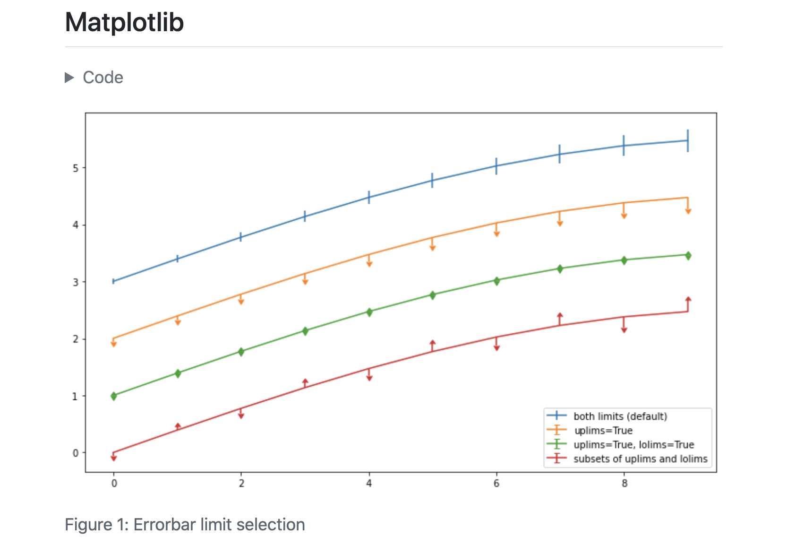

Tutorial: Computations
../_tool-chooser.mdOverview
Quarto has a wide variety of options available for controlling how code and computational output appear within rendered documents. In this tutorial we’ll take a simple notebook that has some numeric output and plots, and cover how to apply these options.
If you want to follow along step-by-step in your own environment, download the notebook below:
Then, create a new directory to work within and copy the notebook into this directory.
Once you’ve done that, switch to this directory in a Terminal, install notebook dependencies (if necessary), and open Jupyter Lab to get started working with the notebook. The commands you can use for installation and opening Jupyter Lab are given in the table below.
| Platform | Commands |
|---|---|
| Mac/Linux | |
| Windows | |
The notebook as we start out is shown below. Note that none of the cells are executed yet.
---
title: Quarto Computations
jupyter: python3
---
## NumPy
```{python}
import numpy as np
a = np.arange(15).reshape(3, 5)
a
```
## Matplotlib
```{python}
import matplotlib.pyplot as plt
fig = plt.figure()
x = np.arange(10)
y = 2.5 * np.sin(x / 20 * np.pi)
yerr = np.linspace(0.05, 0.2, 10)
plt.errorbar(x, y + 3, yerr=yerr, label='both limits (default)')
plt.errorbar(x, y + 2, yerr=yerr, uplims=True, label='uplims=True')
plt.errorbar(x, y + 1, yerr=yerr, uplims=True, lolims=True,
label='uplims=True, lolims=True')
upperlimits = [True, False] * 5
lowerlimits = [False, True] * 5
plt.errorbar(x, y, yerr=yerr, uplims=upperlimits, lolims=lowerlimits,
label='subsets of uplims and lolims')
plt.legend(loc='lower right')
plt.show(fig)
```
## Plotly
```{python}
import plotly.express as px
import plotly.io as pio
gapminder = px.data.gapminder()
gapminder2007 = gapminder.query("year == 2007")
fig = px.scatter(gapminder2007,
x="gdpPercap", y="lifeExp", color="continent",
size="pop", size_max=60,
hover_name="country")
fig.show()
```Next, create a new Terminal within Jupyter Lab to use for Quarto commands.

Finally, run quarto preview in the Terminal, and position Jupyter Lab side-by-side with the browser showing the preview.
Terminal
quarto preview computations.ipynbGo ahead and run all of the cells and then save the notebook. You’ll see that the preview updates immediately.
Cell Output
All of the code in the notebook is displayed within the rendered document. However, for some documents, you may want to hide all of the code and just show the output. Let’s go ahead and specify echo: false within the document execute options to prevent code from being printed.
---
title: Quarto Computations
execute:
echo: false
jupyter: python3
---Save the notebook after making this change. The preview will update to show the output with no code.

You might want to selectively enable code echo for some cells. To do this add the echo: true cell option. Try this with the NumPy cell.
```{python}
#| echo: true
import numpy as np
a = np.arange(15).reshape(3, 5)
a
```Save the notebook and note that the code is now included for the NumPy cell.

There a large number of other options available for cell output, for example warning to show/hide warnings (which can be especially helpful for package loading messages), include as a catch all for preventing any output (code or results) from being included in output, and error to prevent errors in code execution from halting the rendering of the document (and print the error in the rendered document).
See the Jupyter Cell Options documentation for additional details.
Code Folding
Rather than hiding code entirely, you might want to fold it and allow readers to view it at their discretion. You can do this via the code-fold option. Remove the echo option we previously added and add the code-fold HTML format option.
---
title: Quarto Computations
execute:
code-fold: true
jupyter: python3
---Save the notebook. Now a “Code” widget is available above the output of each cell.

You can also provide global control over code folding. Try adding code-tools: true to the HTML format options.
---
title: Quarto Computations
execute:
code-fold: true
code-tools: true
jupyter: python3
---Save the notebook and you’ll see that a code menu appears at the top right of the document that provides global control over showing and hiding code.
```{python}
#| label: fig-limits
#| fig-cap: "Errorbar limit selector"
import matplotlib.pyplot as plt
fig = plt.figure()
fig.set_size_inches(12, 7)
```Let’s improve the appearance of our Matplotlib output. It could certainly stand to be wider, and it would be nice to provide a caption and a label for cross-referencing.
Go ahead and modify the Matplotlib cell to include label and fig-cap options as well as a call to fig.set_size_inches() to set a larger figure size with a wider aspect ratio.
```{python}
#| label: fig-limits
#| fig-cap: "Errorbar limit selector"
import matplotlib.pyplot as plt
fig = plt.figure()
fig.set_size_inches(12, 7)
```Execute the cell to see the updated plot. Then, save the notebook so that the Quarto preview is updated.

Multiple Figures
The Plotly cell visualizes GDP and life expectancy data from a single year (2007). Let’s plot another year next to it for comparison and add a caption and subcaptions. Since this will produce a wider visualization we’ll also use the column option to lay it out across the entire page rather than being constrained to the body text column.
There are quite a few changes to this cell. Copy and paste the code below into the notebook if you want to try them locally.
#| label: fig-gapminder
#| fig-cap: Life Expectancy and GDP
#| fig-subcap:
#| - "Gapminder: 1957"
#| - "Gapminder: 2007"
#| layout-ncol: 2
#| column: page
import plotly.express as px
import plotly.io as pio
gapminder = px.data.gapminder()
def gapminder_plot(year):
gapminderYear = gapminder.query("year == " +
str(year))
fig = px.scatter(gapminderYear,
x="gdpPercap", y="lifeExp",
size="pop", size_max=60,
hover_name="country")
fig.show()
gapminder_plot(1957)
gapminder_plot(2007)Run the modified cell then save the notebook. The preview will update as follows:

Let’s discuss some of the new options used here. You’ve seen fig-cap before but we’ve now added a fig-subcap option.
#| fig-cap: Life Expectancy and GDP
#| fig-subcap:
#| - "Gapminder: 1957"
#| - "Gapminder: 2007"For code cells with multiple outputs adding the fig-subcap option enables us to treat them as subfigures.
We also added an option to control how multiple figures are laid out—in this case we specified side-by-side in two columns.
#| layout-ncol: 2If you have 3, 4, or more figures in a panel there are many options available for customizing their layout. See the article on Figures for details.
Finally, we added an option to control the span of the page that our figures occupy.
#| column: pageThis allows our figure display to span out beyond the normal body text column. See the documentation on Article Layout to learn about all of the available layout options.
_footer.md